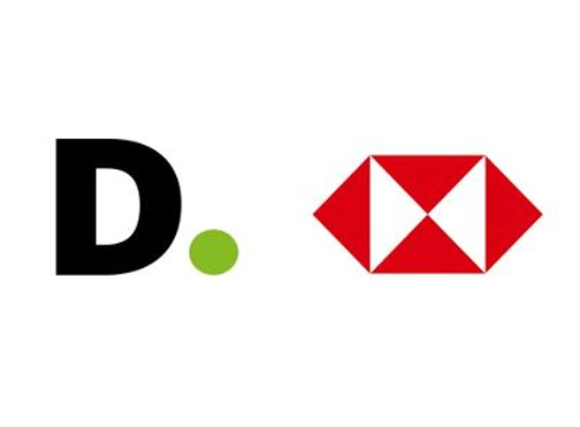
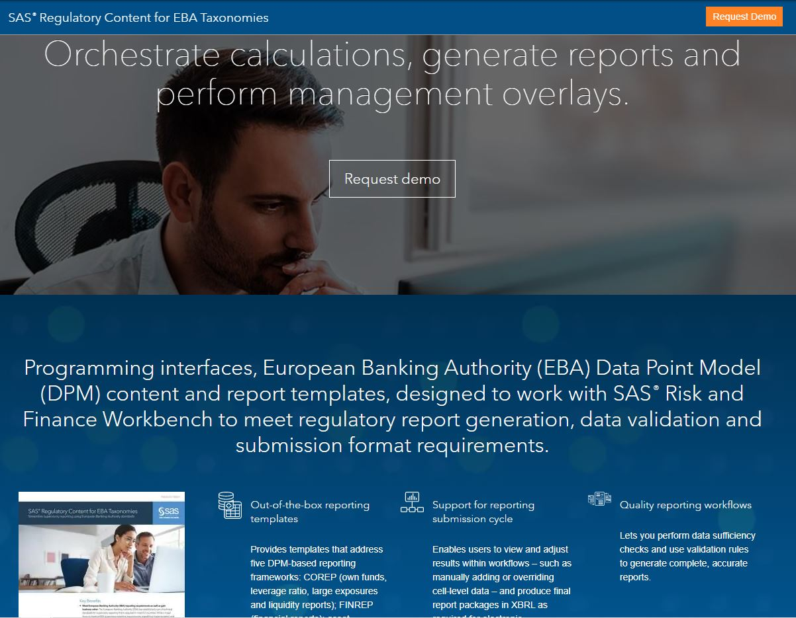

PROFESSIONAL PROJECTS
Seller Growth Analytics (APIE) - Product Design Recommender (PDR)
Amazon, Dec 2022 – Present
- Lead BI part, piloting to launch phase of new features/on-demand customization for XX vendor cohorts expanding across marketplaces. (XX core features + YY customizations for ZZ vendor programs)
- Design & Development of data pipeline for excel reports generation alongwith QS dashboard for internal & external customers. (CSAT score – 4.3)
- Developed validation framework to increase efficiency of PDR launches. (Saving of XX HCs per launch)
- Lead & Mentor juniors to handle re-launches with documentation & SOP framework.
- SQL, Python, Pandas, Quicksight, S3, Excel, Cradle, ETLM, Anaconda.
Worldwide Private Brands
Amazon, Jun 2022 – Dec 2022
- To optimize the product launch TAT, build a dashboard to identify bottlenecks in launches under private brand.
- Perfect Products. (confidential)
- Upcoming Deals. (confidential)
- SQL, QuickSight, Excel.
Risk Management - Retail Risk Model 2.0
Deloitte, Aug 2021 – Jun 2022

- Retail Risk Model 2.0 to implement newer Risk Model to comply & build regulatory reports and dashboards for Basel III implementation.
- Unified Basel & MI Reporting for middle east regions.
- Analyzed different source systems to build consumption layer for reporting.
- Developed an automated validation/test suite.
- SQL, Python, Tableau, SAS, Hive, Jupyter, Anaconda.
Risk Management - SAS® Regulatory Content for EBA Taxonomies
SAS R&D, Mar 2020 – Jul 2021

- SAS® Regulatory Content for EBA Taxonomies provides Programming interfaces, European Banking Authority (EBA) Data Point Model (DPM) content and report templates, with SAS® RFW to support the regulatory report submission.
- Analysis and development of reports & ETL framework to incorporate EBA Taxonomies in the reporting solution.
- Developed pipeline to track data validation failures & code quality checks (QC).
- SAS, SQL, Macros, Python, IRM, RFW, Batch-Scripting, SAS DI, ETL, Data Analysis, Git, Jira, Confluence.
Risk Management - SAS® Solution for Regulatory Capital
SAS R&D, Aug 2019 – Mar 2020
- SAS® Solution for Regulatory Capital computes and reports the regulatory credit risk measures of a bank portfolio under the Basel II, Basel III, and Basel IV standards.
- Implemented the Minimum Loss Coverage – IRB shortfall amount for NPE under capital requirement calculation for Risk Weighted Assets (RWA).
- Credit default analysis to understand the driving features for loan defaulters.
- Rebuilding the solution on top of SAS Risk Stratum platform.
- SAS, SQL, Macros, Python, SAS Visual Analytics, IRM, Risk Stratum.
MIS Reporting
Citi, Mar 2019 – Aug 2019
- MIS Reporting to analyze and process credit card portfolio to generate insights with regular & adhoc reports.
- Performed Cohort Analysis for credit card customers for metrics like Retention, Churn, Reactivation and %change.
- Designed & developed an automated framework for daily, weekly and monthly execution of reports.
- SAS, SQL, Macros, Python, Attribution Analysis.
Anabel for Baloise Insurance
Capgemini, Jul 2016 – Mar 2019
- AnalyticsForBelgium Baloise Insurance creates an integrated analytical platform from data acquired from various new acquisitions. This helped to visualize customer distribution across major products & regions and to promote cross-selling model and detect fraudelent claims.
- Built an enterprise datawarehouse (e-DWH) based on SAS DDS Model for insurance to achieve data unification.
- Developed SAS programs, DI & Dataflux jobs for integration, transformation, standardization and loading of data (ETL).
- VA Dashboard to visualize Customer Portfolio across life and non-life insurance products and global regions.
- SAS, SAS/SQL, Macros, SAS-DI, SAS-DataFlux, SAS-VA, Tableau, DB2, ETL.
ML - Telecom Churn Prediction
Project 5, Jan 2021
- This project tries to identify customers at high risk of churn and identify the main predictors of churn.
- The technique used here is a combination of multiple algorithms like Logistic Regression, Decision Tree, Random Forest and XgBoost.
- Python, Numpy, Pandas, Statsmodel, Scikit-learn, Classification, Machine Learning, Jupyter Notebook.
ML - House Price Prediction
Project 4, Dec 2020
- This project builds a model to predict the price of house.
- The algorithm/technique used is Advanced Regression like Ridge and Lasso with RFE.
- Python, Numpy, Pandas, Scikit-learn, Prediction, Machine Learning, Jupyter Notebook.
ML - Shared Bike Demand Prediction
Project 3, Oct 2020
- This project tries to predict the bike demand after the ongoing quarantine ends.
- The algorithm/technique used is Multiple Linear Regression.
- Python, Numpy, Pandas, Statsmodel, Scikit-learn, Prediction, Machine Learning, Jupyter Notebook.
EDA - Lending Club Credit Default Analysis
Project 2, Oct 2020
- The Credit Default Analysis is performed on customer data of LendingClub to identify the driver features of loan defaulters.
- Python, Numpy, Pandas, Seaborn, Matplotlib, Jupyter NB.
EDA - Investment Analysis
Project 1, Sep 2020
- An EDA is done to understand the global investment trends for providing investment suggestions to Spark Funds.
- Python, Numpy, Pandas, Seaborn, Matplotlib, Jupyter NB.
EDA - Australian Road Fatalities
Micro Project 7, Jun 2021
- I have analysed the Road Accidents data to answer questions over the Road Fatalities over years.
- SAS, SG Procedures, Data Analysis.
EDA - Global Happiness Index
Micro Project 6, Jun 2021
- I have explored, visualised and interpreted global happiness scores over the period 2015—2019.
- SAS, SG Procedures, Data Analysis.
EDA - Volcanoes of the Holocene
Micro Project 5, Jun 2021
- EDA is performed to understand the volcanoes that have erupted in the last 10,000 years.
- SAS, SG Procedures, Data Analysis.
ML - CO2 Emission Prediction
Micro Project 4, Dec 2020
- This project identifies the macroeconomic factors that are biggest predictors of global warming i.e. co2 emissions.
- The techniques used is Lasso Regularization Linear Regression.
- Python, Pandas, Scikit-learn, Regression, Machine Learning, Jupyter Notebook.
ML - SMS Spam Detection
Micro Project 3, Nov 2020
- This task classifies the spam and non-spam SMSes using naive bayes.
- The techniques used are Multinomial Naive Bayes and Bernoulli Naive Bayes.
- Python, Numpy, Pandas, Statsmodel, Scikit-learn, Classification, Machine Learning, Jupyter Notebook.
EDA - World Development Indicators
Micro Project 2, Sep 2020
- This project builds a Interactive UI to explore and understand the interactions between various world development indicators.
- It implements the deployment of Plotly Dash Application using Heroku.
- Python, Dash, Pandas, Plotly, Heroku.
EDA - Olympics Data Analysis
Micro Project 1, Jun 2020
- An EDA performed to understand the top performing countries in Olympics.
- Python, Numpy, Pandas, Matplotlib, Seaborn, Plotly, Jupyter Notebook.